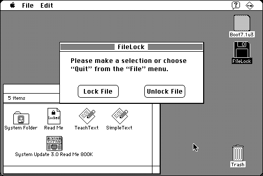

Download
FileLock_68k.zip (45K) Big Al FileLock v2.03 repackaged into a zipped hfs disk image and checksum file. The disk image can be mounted with Mini vMac.
FileLock_68k.sit (41K) Big Al FileLock v2.03 in the original format.
copyright: Al Staffieri Jr.
mod date: Jul 24, 1996
license: shareware
official url :
Al's Older Macintosh Software
A “simple program which lets you password protect any file.” A file that is locked this way is harder to access, but it is not encrypted, and the original contents can be seen with a low level file editor. For “System 7.1” or later.

If you find these downloads useful, please consider helping the Gryphel Project, which hosts them.
Here are the md5 checksums for the downloads, signed with Gryphel Key 5:
--------- GRY SIGNED TEXT --------- 621056ae5f8772af2979516fb689b32c FileLock_68k.zip 0c1e02921f221bf85cfe004f1538c140 FileLock_68k.sit ------- BEGIN GRY SIGNATURE ------- Gry/4Xa8CFcUzxdN/Ee5CT5DghDWu1DMI0Yif3BLqO7L/iJxrorUHno0MmkX8tgT exGo22pNxhBYJYvZqZTHcfmP+GlvnJi/jV58n5JjCKbzL3Dgn0auKAs7i8I4Xg2E 7nrSDJ6IsvHgQVSoyye6qj+FUQLYGBdsEWCRO58pqUufOAQWn/u/3H+3nKu39Quz -------- END GRY SIGNATURE --------